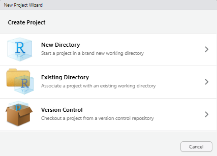
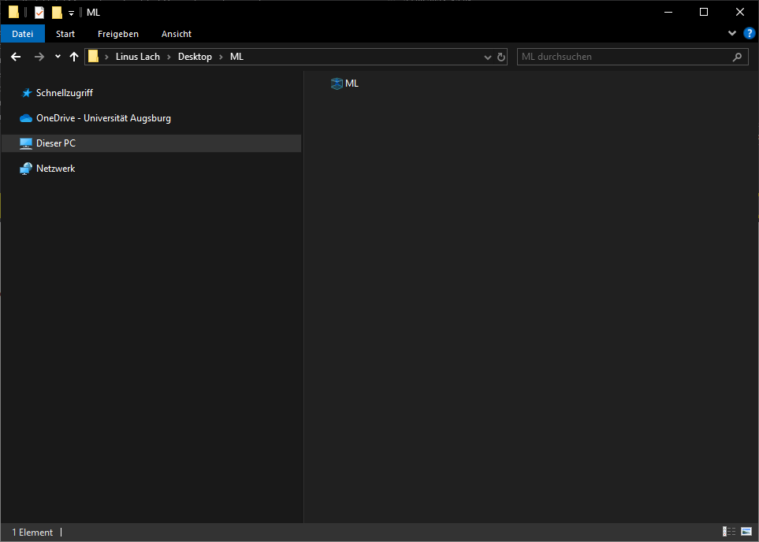
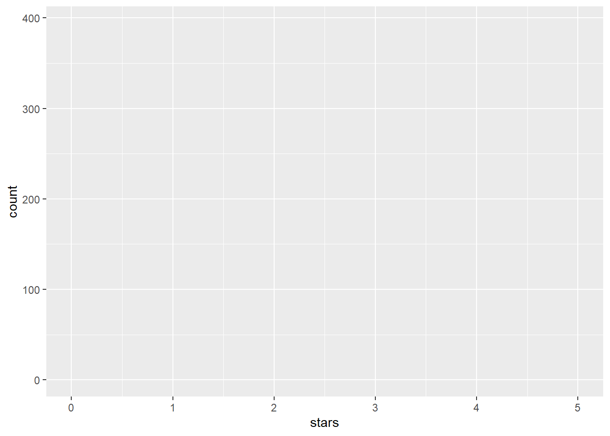
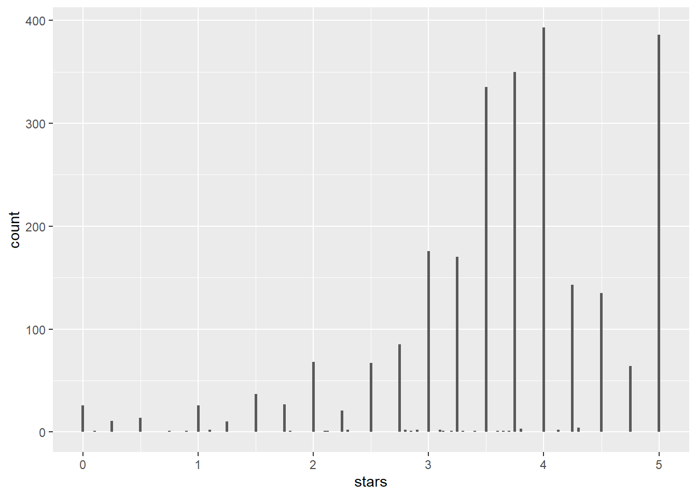
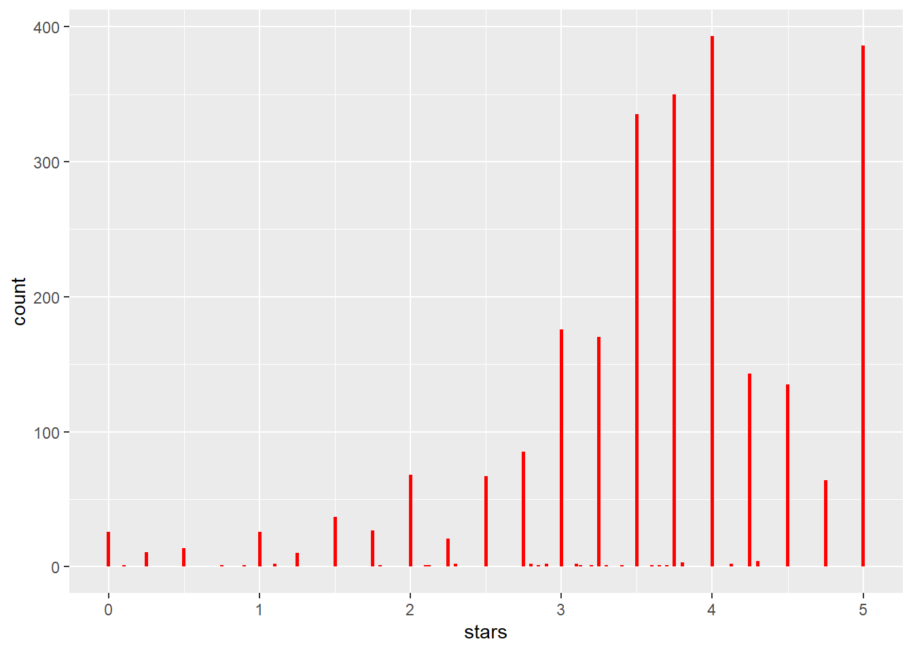
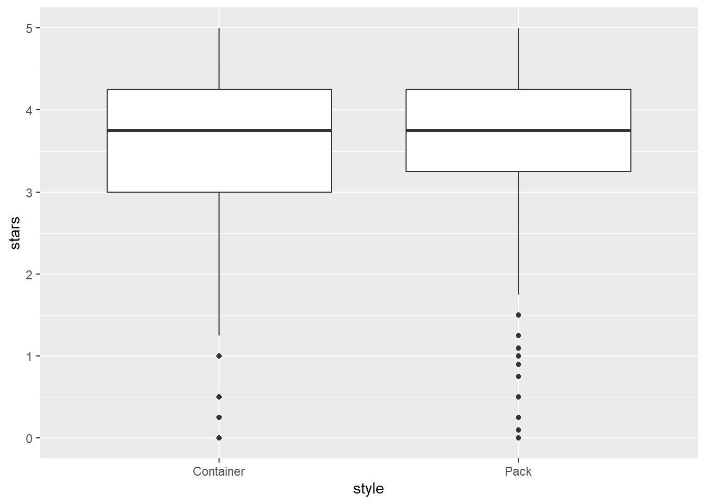
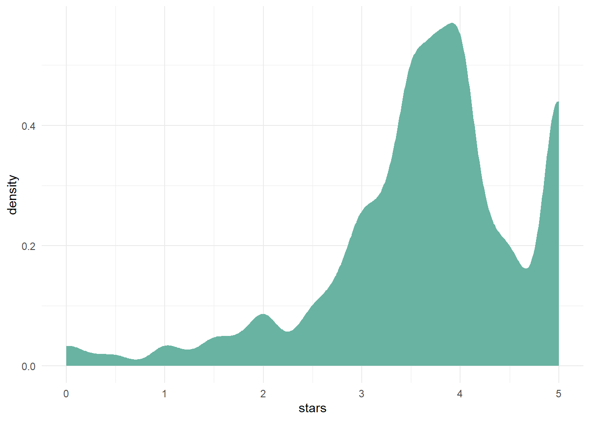

x1 <- c(1,2,3,4,5)
x2 <- 1:5
x3 <- seq(1,5)1 (Kurz)Einführung in R
Eine vollumfängliche Wiederholung von R Konzepten welche im Grundstudium gelehrt werden würden den Rahmen dieses Manuskriptes Sprengen. Wir werden deshalb in dieser Übung den Fokus auf die Installation von R, RStudio, wichtigen Libraries und deren grundlegende Anwendung legen. Für eine Umfangreiche Einfürung in R kann ich das YARDS Manuskript von Albert Rapp empfehlen.
1.1 Installieren von R und RStudio
In diesem Abschnitt wiederholen wir kurz die Installation von R und RStudio. Obwohl R (die Programmiersprache) mit einer vorinstallierten grafischen Benutzeroberfläche (GUI) installiert werden kann, werden wir stattdessen RStudio. RStudio kommt mit einigen Vorteilen gegenüber der internen R Gui, wie zum Beispiel das einsehen von Variablenwerten, Plots und Programmcode gleichzeitig. Es ist allerdings wichtig zu beachten, dass RStudio nur dann funktioniert, wenn R zuvor auch installiert wurde.
Nach der erfolgreichen Installation von R und RStudio sollte sich beim Start von RStudio ein Fenster öffnen, das in etwa so aussieht wie das folgende (vgl. RStudio User Guide).

Das Source Panel zeigt ein .R File namens ggplot2.R. .R Dateien sind das standard R Format in welchen Code geschrieben und gespeichert wird. Eine ästhetischere Variante sind sogenannte Quarto Markdown Files (Endung .qmd) welche erlauben Text und Code zu kombinieren. Zum Beispiel wurde dieses Manuskript komplett mit Quarto geschrieben 😁 .
Natürlich muss man sich nicht zwingend in Quarto einlesen und kann die folgenden Aufgaben auch in normalen .R Skripten ausführen.
1.1.1 Arbeiten mit Arbeitspfaden und R Projekten
Nach dem Öffnen von RStudio kann durch den Befehl getwd() im Konsolen Panel der Pfad des aktuellen Arbeitsverzeichnis ausgegeben werden. Das Arbeitsverzeichnis ist zum Beispiel dann wichtig, wenn wir neue Datein anlegen, oder Datensätze einlesen wollen. Wenn der Rückgabewert des Befehls getwd() zum Beispiel "C:/Users/lachlinu/Documents/Vorlesungen/Data_Mining/" lautet, kann R auf jede Datei im Verzeichnis Data_Mining zugreifen. Eine Möglichkeit, das Arbeitsverzeichnis zu ändern, ist die Verwendung des Befehls setwd(). Hierbei ist wichtig, entweder den absoluten neuen Pfad, oder den relativen neuen Pfad anzugeben. Falls das Ziel ist, in das /Documents Verzeichnis zu wechseln, so kann man durch die Angabe des relativen Pfades setwd('../../../') das Verzeichnis /Documents auswählen, sofern das aktuelle Verzeichnis "C:/Users/lachlinu/Documents/Vorlesungen/Data_Mining/" ist. Die ../ Notation wird verwendet um das übergeordnete Verzeichnis auszuwählen. Alternativ kann man auch einfach den absoluten Pfad "C:/Users/lachlinu/Documents" in den setwd() Befehl einfügen um das Verzeichnis entsprechend zu wechseln. Das manuelle Ändern des Verzeichnisses in jedem .R Skript kann schnell mühsam werden, daher ist die Einrichtung eines Projekts eine praktischere Alternative. RStudio-Projekte ermöglichen die Erstellung eines individuellen Arbeitsverzeichnisses für mehrere Kontexte. Zum Beispiel können wir R nicht nur zum Lösen von Aufgaben für Data Mining verwenden, sondern auch für Abschlussarbeiten. Wenn man also zwei verschiedene Projekte einrichtet, kann man die Arbeitsverzeichnisse und Arbeitsbereiche für jedes Projekt individuell organisieren.
Das folgende Beispiel illustriert wie man ein Projekt einrichtet und verwendet:
Über den
FileTab, wähleNew Project....
Durch das wählen von
Existing Directorykann man durch den Explorer ein Verzeichnis wählen welches bereits existiert und dann durch denCreate Projectbutton ein neus Projekt in diesem Verzeichnis anlegen.
Das neue Projekt kann dann einfach angeklickt werden, wodurch sich ein neues RStudio Fenster öffnen sollte.

Sobald sich über das anklicken des Projekts ein neues RStudio Fenster geöffnet hat wird durch das Ausführens des getwd() Befehls der Arbeitspfad des Projekts ausgegeben. Nun kann auch jede Datei in diesem Verzeichnis direkt verwendet werden.
1.2 Einfache R Befehle und Funktionen
Nach der erfolgreichen Installation von R und RStudio widmen wir uns nun ein paar grundlegenden Programmierkonzepten in R.
1.2.1 Vektoren, Datensätze und Rechenoperationen
1.2.1.1 Vektoren
Variablen wie Vektoren, oder Arrays werden in R mit dem <- erstellt. Falls zum Beispiel das Ziel ist, einen Vektor zu erstellen, welcher die Werte \(1,2,3,4,5\) enthält, gibt es viele Verschiedene Möglichkeiten dies zu erreichen.
Jeder der obigen Vektoren enthält die Zahlen 1-5. x1 wurde durch die c() Funktion erstellt, welche einen Vektor entsprechend der übergebenen Argumente erzeugt. x2 wurde mithilfe des : Operators erstellt, welcher einer ganzzahlige Sequenz der Zahlen beginnend mit der Zahl links des Operators bis zur Zahl rechts des Operators erzeugt. Die Erzeugung des Vektors x3 basiert auf der selben Idee wie die Erstellung des Vektors x2, allerdings wurde hier explizit die Funktion seq (Sequence) verwendet um die Zahlenfolge zu generieren. Die seq Funktion erlaubt im Gegensatz zur Verwendung des : Operators einige weitere Argumente wie zum Beispiel das Argument by, oder length.out.
Der folgende Befehl erzeugt beispielsweise eine Sequenz von 1 bis 5 mit Schrittgröße \(0.5\).
seq(from = 1,to = 5,by = 0.5)[1] 1.0 1.5 2.0 2.5 3.0 3.5 4.0 4.5 5.0Durch das Spezifizieren von length.out kann man die Länge der Sequenz steuern. So wird im folgenden Beispiel eine Sequenz von Zahlen zwischen 1 und 5 erzeugt mit der Länge 20.
Die Zuweisung von Werten in Funktionen erfolgt im obigen Beispiel mit dem Symbol =. Die Zuweisung neuer Variablen außerhalb von Funktionen kann auch mit dem = Symbol erfolgen, aber es wird selten verwendet und außer in einigen pathologischen Fällen gibt es keinen Unterschied. Die meisten R-Benutzer bevorzugen jedoch die Zuweisung von Umgebungsvariablen mit <-, was in Funktionsaufrufen nicht funktioniert.
seq(1,5,length.out = 20) [1] 1.000000 1.210526 1.421053 1.631579 1.842105 2.052632 2.263158 2.473684
[9] 2.684211 2.894737 3.105263 3.315789 3.526316 3.736842 3.947368 4.157895
[17] 4.368421 4.578947 4.789474 5.000000
Tip
Die Argumente einer Funktion müssen nicht immer übergeben werden. Im obigen Beispiel wurden die Bennenungen "from=" und "to=" weggelassen. Das weglassen der Argumentnamen beim Aufruf der Funktion ist lediglich der Faulheit der programmierenden Person geschuldet. In den meisten Fällen lohnt es sich Zwecks Lesbarkeit diese zu benennen.
Der Abstand zwischen den einzelnen Folgenglieder der Folge ist hierbei gegeben durch
\[
\frac{5-1}{20-1} = \frac{4}{19}.
\] Im Zähler ist steht die Länge des Intervalls welche durch obere Grenze - untere Grenze berechnet wird und im Nenner Anzahl der Folgeglieder - 1.
Das Zugreifen auf Listenelemente wird durch eckige Klammern ermöglicht. Möchte man zum Beispiel auf das zweite Element des Vektors x2 zugreifen, so wendet man die folgende Notation an:
x2[2][1] 2Innerhalb der eckigen Klammer steht der Index, bzw. die Indizes welche zurückgegeben werden sollen. So kann man auch zum Beispiel die ersten zwei Einträge des Vektors x2 durch folgende Notation auswählen:
x2[1:2][1] 1 21.2.1.2 Erstellen von Datensätzen
Obwohl die meisten Datensätze, welche wir in der übung verwendet bereits erstellt wurden, ist es sehr sinnvoll sich mit der Erstellung von eigenen Datensätzen auseinander zu setzen. Besonders wenn man auf Basis bereits existierender Datensätze Teildatensätze erstellen will, ist diese Kenntnis hilfreich.
Ein Grundlegender Befehl zum erzeugen von Datensätzen ist die data.frame Funktion.
data<- data.frame(
x = seq(1,10,length.out = 18),
y = letters[1:18],
z = unlist(
rep(
strsplit("The quick brown fox jumps over the lazy dog",
split = " "),
2)
)
)Das Datensatz data enthält drei Spalten: x,y,z welche mit verschiedenen Werten erzeugt wurden. Die Spalte x wurde mithilfe der seq Funktion mit 18 Werten befüllt welche zwischen \(1\) und \(10\) liegen. Die Spalte y wurde mithilfe des vordefinierten letters Vektor befüllt. Dieser enthält die Buchstaben a-z. Hierbei wurden ebenso die 18 Einträge verwendet. In der letzten Spalte z wurden mehrere Funktionen verschachtelt auf einmal verwendet. Die innerste Funktion strsplit teilt einen gegebenen String (<chr>) Vektor in einzelne Komponenten auf. Die Teilung des langen Strings folgt durch das Argument split. Hier wurde als Split Argument das Leerzeichen " " übergeben. Dadurch wird der Satz "The quick brown fox jumps over the lazy dog" an jedem Leerzeichen getrennt und eine Liste der einzelnen Wörter zurückgegeben. Die rep (Repeat) Funktion wiederholt das übergebene Argument und wiederholt dieses gemäß der übergebnen Zahl. Da der Rückgabewert der rep Funktion in diesem Fall eine verschachtelte Liste ist (eine Liste mit zwei Elementen, wobei jedes dieser beiden Elemente wieder selbst eine Liste ist), wir die Verschachtelung über die unlist funktion aufgehoben.
Der Datensatz hat somit folgende Struktur:
data x y z
1 1.000000 a The
2 1.529412 b quick
3 2.058824 c brown
4 2.588235 d fox
5 3.117647 e jumps
6 3.647059 f over
7 4.176471 g the
8 4.705882 h lazy
9 5.235294 i dog
10 5.764706 j The
11 6.294118 k quick
12 6.823529 l brown
13 7.352941 m fox
14 7.882353 n jumps
15 8.411765 o over
16 8.941176 p the
17 9.470588 q lazy
18 10.000000 r dogDie Variablen eines Datensatzes könne über verschiedene Methoden ausgewählt und bearbeitet werden. Im nächsten Abschnitt werden hierfür einige dieser Methoden vorgestellt.
1.2.1.3 Rechenoperationen in R
R wurde ursprünglich als statistische Programmiersprache eingeführt, weshalb bereits viele Funktionen zum berechnen verschiedener Werte vordefiniert sind.
Arithmetische Rechenoperation funktionieren für Zahlenwerte, Zahlenvektoren und auch gemischten Vektoren.
5+2[1] 7seq(1:5)*2[1] 2 4 6 8 10seq(1:5)^2[1] 1 4 9 16 25cos(seq(0,pi,length.out=10)) [1] 1.0000000 0.9396926 0.7660444 0.5000000 0.1736482 -0.1736482
[7] -0.5000000 -0.7660444 -0.9396926 -1.0000000Obige Beispiele enthalten nur eine kleine Selektion an Methoden welche verwendet werden können, um verschiedene Rechenoperationen durchzuführen. R Funktioniert gewissermaßen teilweise wie ein Taschenrechner, weshalb dieser Abschnitt auch nicht in der Tiefe ausgeführt werden muss.
1.3 Arbeiten mit Datensätzen
Im Zusammenhang mit Data Mining bilden Daten die Grundlage. Egal ob das Ziel ist das Wetter, künftige Aktienkurse oder die Grundmiete einer potenziellen Mietwohnung vorherzusagen - ohne hochwertige Daten versagen selbst die fortschrittlichsten Modelle. Die Realität sieht jedoch so aus, dass Daten, die wir aus dem Internet, von Servern oder aus Excel Tabellen beziehen, oft alles andere als makellos sind. So können fehlende Werte beispielsweise als NA (Not Available), NaN (Not a Number), NULL oder einfach als leere Zeichenkette „“ kodiert sein. Aus diesem Grund ist es wichtig, dass die grundlegenden Datenmanipulationen in R nochmals diskutier werden.
1.3.1 Daten Importieren
Viele Datensätze sind zwar bereits in R integriert, bzw. können über Libraries eingelesen werden, allerdings sind einige der Datesätze welche wir in der Übung verwenden nur durch externe Quellen verfïugbar. Die meisten Daten werden im csv oder txt Format zur Verfügung gestellt. Es ist deshalb wichtig zu verstehen wie man diese Datensätze einliest bevor man tatsächlich mit diesen arbeitet.
Für die folgenden Übungen werden wir das Ramen Dataset untersuchen, welches entweder von der Data Science Plattform Kaggle oder dem untenstehenden Button heruntergeladen werden kann.
Der Ramen Datensatz enthält Informationen über verschiedene Instant Ramen gerichte, welche besonders beliebt unter Studierenden während der Prüfungszeit sind.
Die Daten können dann zum Beispiel in einem Verzeichnis Daten gespeichert werden, welches im gleichen Verzeichnis liegt wie die Projektdatei. Um die Daten einzulesen verwendet man in diesem Fall die read.csv Funktion verwenden. Im folgenden Code Snippet wird der Ramen Datensatz aus dem Verzeichnis /data eingelesen und unter dem Namen data_ramen gespeichert.
data_ramen <- read.csv(file = "data/ramen-ratings.csv")1.3.2 Einfache Datenmanipulation und Visualisierung
Für die meisten Übungen werden wir das {tidyverse} verwenden, welches eine Sammlung von Libraries enthält die das Arbeiten mit Daten stark vereinfachen. Um die Sammlung von Libraries zu installieren, kann der install.packages() Befehl verwendet werden:
install.packages("tidyverse")Nach der Installation kann die Library dann mit dem library Befehl zur aktuellen R Session hinzugefügt werden.
library("tidyverse")── Attaching core tidyverse packages ──────────────────────── tidyverse 2.0.0 ──
✔ dplyr 1.1.4 ✔ readr 2.1.5
✔ forcats 1.0.0 ✔ stringr 1.5.1
✔ ggplot2 3.5.1 ✔ tibble 3.2.1
✔ lubridate 1.9.3 ✔ tidyr 1.3.1
✔ purrr 1.0.2
── Conflicts ────────────────────────────────────────── tidyverse_conflicts() ──
✖ dplyr::filter() masks stats::filter()
✖ dplyr::lag() masks stats::lag()
ℹ Use the conflicted package (<http://conflicted.r-lib.org/>) to force all conflicts to become errorsDas {tidyverse} enthält eine vielzahl wichtiger Libraries, von welchen wir vor allem die folgenden drei verwenden werden:
{ggplot2}für das Erstellen von Grafiken,{dplyr}für Datenmanipulation,{tibble}für das effiziente Speichern von Daten.
Eine sehr gute Einführung in diese Library kann unter folgendem Link eingesehen werden. Der Entwickler hinter der Library hat ebenso ein kostenloses Buch namens R for Data Science geschrieben, welches eine sehr Umfangreiche Einführung in die verschiedenen Libraries des {tidyverse} gibt.
Nach dem erfolreichen Installieren und hinzufügen der Library können wir direkt die erste essentielle Funktion nutzen. Die glimpse() Funktion gibt einen kompakten überblick über den Inhalt und die beinhaltenden Datentypen des unterliegenden Datensatzes.
glimpse(data_ramen)Rows: 2,580
Columns: 7
$ Review.. <int> 2580, 2579, 2578, 2577, 2576, 2575, 2574, 2573, 2572, 2571, 2…
$ Brand <chr> "New Touch", "Just Way", "Nissin", "Wei Lih", "Ching's Secret…
$ Variety <chr> "T's Restaurant Tantanmen ", "Noodles Spicy Hot Sesame Spicy …
$ Style <chr> "Cup", "Pack", "Cup", "Pack", "Pack", "Pack", "Cup", "Tray", …
$ Country <chr> "Japan", "Taiwan", "USA", "Taiwan", "India", "South Korea", "…
$ Stars <chr> "3.75", "1", "2.25", "2.75", "3.75", "4.75", "4", "3.75", "0.…
$ Top.Ten <chr> "", "", "", "", "", "", "", "", "", "", "", "", "", "", "", "…Rows: 2,580 bedeutet, dass der Datensatz 2.580 Einträge hat, und Columns: 7 bedeutet, dass der Datensatz jeweils 7 Variablen enthält. Die erste Spalte enthält die Variablennamen, ihre Datentypen und einige Anfangswerte, wodurch der Datensatz eine klare Struktur erhält. Wir können bereits sehen, dass außer einer Variablen (Review) jede andere Variable vom Typ chr ist, was für character oder string steht.
1.3.2.1 Anpassen der Variablen
Beim Aufrufen der glimpse() Funktion ist direkt aufgefallen, dass die Variablennamen teilweise inkonsistent sind. Die erste Spalte hat zum Beispiel den Namen "Review..". Um eine konsistente und einfache Namengebung zu verwenden, können wir die janitor::clean_names Funktion verwenden.
Tip
Die obige Notation wird verwendet, wenn man zusätzlich zum Funktionsname auch noch die Library der Funktion benennen will. Besonders bei der vermeidung von sogenannten ‘namespace conflicts’, bei welchen zwei Funktionen aus verschiedenen Libraries die gleichen Namen besitzen.
Auch hier gilt: Eventuell muss die {janitor} Library zuerst installiert werden, bevor die Funktion verwendet werden kann. Die Installation kann analog wie im Beispiel zur {tidyverse} Library durchgeführt werden.
Wenn die Library dann erfolgreich installiert wurde, können wir die Daten mit einer angepassten Version überschreiben:
data_ramen <- janitor::clean_names(dat = data_ramen)Nach dem Abändern der Daten und einem erneuten Aufrufen der glimpse() Funktion kann die Änderung der Variablennamen eingesehen werden:
glimpse(data_ramen)Rows: 2,580
Columns: 7
$ review <int> 2580, 2579, 2578, 2577, 2576, 2575, 2574, 2573, 2572, 2571, 25…
$ brand <chr> "New Touch", "Just Way", "Nissin", "Wei Lih", "Ching's Secret"…
$ variety <chr> "T's Restaurant Tantanmen ", "Noodles Spicy Hot Sesame Spicy H…
$ style <chr> "Cup", "Pack", "Cup", "Pack", "Pack", "Pack", "Cup", "Tray", "…
$ country <chr> "Japan", "Taiwan", "USA", "Taiwan", "India", "South Korea", "J…
$ stars <chr> "3.75", "1", "2.25", "2.75", "3.75", "4.75", "4", "3.75", "0.2…
$ top_ten <chr> "", "", "", "", "", "", "", "", "", "", "", "", "", "", "", ""…1.3.3 Anpassen von Datensätzen
1.3.3.1 Die mutateFunktion
Um Anpassungen an den Daten vorzunehmen, bietet sich die dplyr::mutate Funktion perfekt an.
Die mutate Funktion kann entweder neue Spalten generieren, oder vorhandene Spalten modifizieren. Im folgenden Beispiel wird die mutate Funktion dafür verwendet die Variable stars vom Datentyp <chr> in <dbl> umzuwandeln und die Variable top_ten zu entfernen.
Warning: There was 1 warning in `mutate()`.
ℹ In argument: `stars = as.double(stars)`.
Caused by warning:
! NAs durch Umwandlung erzeugtIn der ersten Zeile der Codezelle wird angegeben, dass der Datensatz
data_ramendurch eine veränderte Version überschrieben werden soll.Der ursprüngliche Datensatz
data_ramenwird in der zweiten Zeile an diemutateFunktion übergeben.In der dritten Zeile wird als erstes Argument die Variable
starsdurch die Ausgabe der Funktionas.doublemit Argumentstarsüberschrieben. Die Funktionas.doubleist eine Funktion der{base}library.In der vierten Zeile wird als weiteres Argument (separiert durch ein
,aus der vorherigen Zeile) die den Variabletop_tenentfertn, indem die Variable mitNULLüberschrieben wird.
Das ausführen der vorherigen Code Zelle wirft folgende Warnung:
Warning message: There was 1 warning in
mutate(). i In argument:stars = as.double(stars). Caused by warning: ! NAs introduced by coercion
Dies liegt daran, dass in der Variable stars fehlende Werte vorhanden sind. Durch das Anwenden der as.double Funktion wurden die Fehlenden werte in NA Werte umgewandelt, was aber erstmal kein Problem darstellt.
1.3.3.2 Der Pipe Operator %>%
In der Code Zelle
wurde in der ersten Zeile der sogenannte Pipe Operator %>% verwendet. Der Pipe Operator ist ein mächtiges Werkzeug aus der {magittr} Library welche erlaubt Verkettungen von Funktionen durchzuführen. Die Wortwörtliche übersetzung “Rohr” steht hierbei sinnbildlich für den Vorgang dass auf der einen Seite (links) z.B. Daten übergeben werden und auf der anderen Seite (rechts) nach den durchgeführten Transformationen ausgegeben werden. Die Stärke des Operators liegt hierbei in der Möglichkeit viele Operationen sequentiell durchzuführen und dabei die Lesbarkeit und Übersichtlichkeit zu bewahren.
So kann man zum Beispiel nach der initialen Transformation durch die mutate Funktion die na.omit Funktion auf die resultierenden Daten angewendet werden, um alle NA, bzw. NaN Werte zu entfernen.
data_ramen <- data_ramen %>%
mutate(
stars = as.double(stars),
top_ten = NULL
) %>%
na.omit()Durch die Anwendung des Pipe Operators muss auch der Datensatz im Obigen Beispiel nicht als Argument der Funktion übergeben werden. Ohne den Pipe Operator könnte man das obige Beispiel auch wie folgt implementieren:
data_ramen <- mutate(na.omit(data_ramen),
stars = as.double(stars),
top_ten = NULL)1.3.3.3 Filtern, Gruppieren und Zusammenfassen von Datasets
Im vorherigen Abschnitt haben wir uns mit grundlegenden Funktionen für das Anpassen der Daten beschäftigt. Ein weiterer wichtiger Aspekt beim Umgang mit Daten ist die sogenannte Explorative Datenanalyse (EDA). Hierbei werden die unterliegenden Daten mithilfe von deskriptiven und induktiven Methoden untersucht. Wichtige Funktionen in diesem Kontext sind die filter, group_by und summarise Funktionen aus dem {dplyr} Package.
Angenommen wir wollen für das data_ramen Dataset herausfinden, wie viele Marken (brands) mehr als 30 Sorten (varieties) an Instant Ramen Nudeln anbieten. Intuitiv macht es Sinn die Einträge des Datensatzes zu Gruppieren, wobei jede Marke einer Gruppe entspricht. Nach der Bildung von Gruppen erzeugt durch die Marken, kann dann für jede Gruppe die Anzahl der Einträge innerhalb der Gruppen berechnet werden. Abschließend filtert man die resultierenden Ergebnisse nach dem Kriterium, dass mindestens 30 Einträge in einer Gruppe enthalten sein müssen. Diese beschriebene Heuristik lässt sich mithilfe des folgenden Skripts umsetzen:
# A tibble: 12 × 2
brand num_var
<chr> <int>
1 Indomie 53
2 Lucky Me! 34
3 Mama 71
4 Maruchan 76
5 Myojo 63
6 Nissin 381
7 Nongshim 98
8 Ottogi 45
9 Paldo 66
10 Samyang Foods 51
11 Vifon 33
12 Vina Acecook 34Fassen wir die Schritte im obigen Skript nochmal zusammen:
In der ersten Zeile wird der Datensatz
data_ramendurch den Pipe Operator in die folgenden Funktionen übergeben.In der zweiten Zeile wird der
group_byBefehl verwendet um die Einträge des Datensatzes nach der Variablebrandzu Gruppieren.TipDurch das alleinige Aufrufen der
group_byFunktion mit der entsprechenden Gruppierungsvariable als Argument, wird im Output bereits angezeigt wie viele verschiednen Gruppen erstellt wurden.data_ramen %>% group_by(brand) %>% glimpse()Rows: 2,577 Columns: 6 Groups: brand [355] $ review <int> 2580, 2579, 2578, 2577, 2576, 2575, 2574, 2573, 2572, 2571, 25… $ brand <chr> "New Touch", "Just Way", "Nissin", "Wei Lih", "Ching's Secret"… $ variety <chr> "T's Restaurant Tantanmen ", "Noodles Spicy Hot Sesame Spicy H… $ style <chr> "Cup", "Pack", "Cup", "Pack", "Pack", "Pack", "Cup", "Tray", "… $ country <chr> "Japan", "Taiwan", "USA", "Taiwan", "India", "South Korea", "J… $ stars <dbl> 3.75, 1.00, 2.25, 2.75, 3.75, 4.75, 4.00, 3.75, 0.25, 2.50, 5.…so wurden im obigen Beispiel 355 verschiedene Gruppen gebildet, woraus wir schließen können, dass im Datensatz 355 verschiedene Marken enthalten sind (unter der Annahme, dass keine Duplikate enthalten sind).
Der
summariseBefehl wird dann verwendet, um verschiedene Deskriptive Statistiken auf den Gruppen anzuwenden. In diesem Fall wird ähnlich wie bei der Verwendung dermutateFunktion eine neue Spaltenum_varserstellt welch in jeder Zeile den Output der Funktionnenthält. Diedplyr::nFunktion hat als Rückgabewert die Gruppengröße.
1.3.4 Faktor Variablen
Ein wichtiger Datentyp, der sowohl ordinale (Daten mit einem gewissen Ordnungsbegriff) als auch nominale Daten verarbeiten kann, sind so genannte Faktor Variablen (Datentyp <fct>).
Betrachten wir hierfür den folgenden Synthetischen Datensatz mit sieben Personen mit entsprechenden Altersgruppen und Augenfarben.
data_example <- tibble(
names = c("Alice", "Bob", "Charlie", "Diana", "Eve", "Frank", "Grace"),
age_groups = c("18-25", "<18", "26-35", "36-45", "18-25", "60+", "26-35"),
eye_color = c("Blue", "Brown", "Green", "Hazel", "Brown", "Blue", "Green")
)
data_example # A tibble: 7 × 3
names age_groups eye_color
<chr> <chr> <chr>
1 Alice 18-25 Blue
2 Bob <18 Brown
3 Charlie 26-35 Green
4 Diana 36-45 Hazel
5 Eve 18-25 Brown
6 Frank 60+ Blue
7 Grace 26-35 Green
Note
Im obigen Code Snippet wurde die tibble::tibble Funktion verwendet. Tibbles werden ähnlich wie data.frame Objekte zum speichern von Datensätzen verwendet. Tibbles haben allerdings zum Beispiel den Vorteil, dass sie bei der Ausgabe in der Konsole übersichtlicher dargestellt werden.
Da die Variable age_group nur eine Altersspanne angibt, ist es nicht sinnvoll, sie als Zahl und nicht als Ordinalvariable zu kodieren. Mit der Funktion mutate können wir deshalb die Altersgruppen als Ordinalvariablen (ordered factors) kodiert werden. Dazu wird die Variable age_groups in einen Faktor mit Stufen und Label gesetzt. Die Stufen geben die Reihenfolge der Werte an, und die Label können zur Umbenennung dieser Kategorien verwendet werden.
Ähnlich wie im vorherigen Beispiel sollten wir angeben, dass wir den Datensatz
data_examplemit einer veränderten Version überschreiben.In der zweiten Zeile wird dann die
mutateFunktion aufgerufen um in der dritten Zeile die Variabeleage_groupszu überschreiben.Durch das Setzen von
age_groups = factor(age_groups, ...)wird die Variableage_groupsin einen (bisher ungeordneten) Faktor umgewandelt, der das setzen von Stufen (levels) und Labels ermöglicht.So wird durch das Setzen von
levels = c("<18", "18-25",...)eine Ordnung auf die Variable auferlegt.ordered=TRUEgibt an, dass die Altersgruppen nach den imlevelsVektor angegebenen Stufen aufsteigend sortiert sind.Zu guter Letzt gibt
labels = c("child", "adult", ...)die Bezeichnungen an, welche die numerischen Altersgruppen ersetzen. Zum Beispiel wird \(<18\) als"child"bezeichnet, die Bereiche18-25,26-35und36-45als “adult“, und \(>60\) als"senior".
Analog kann auch die Variable eye_color in eine nominale Faktorvariable umgewandelt werden:
data_example <- data_example %>%
mutate(
eye_color = factor(eye_color)
)1.4 Datenvisualisierung mit {ggplot2}
Ein weiterer wichtiger Aspekt des Data Minings ist die grafische Darstellung von Datensätzen. Die Beschreibung eines Algorithmus mit mathematischer Notation oder die Untersuchung eines Datensatzes mit Hilfe von deskriptiven und induktiven Statistiken allein kann eine Herausforderung für die Vermittlung von Botschaften darstellen. Obwohl R einige Basisfunktionen zur Erstellung von Grafiken bietet, wird in diesem Kurs hauptsächlich die Bibliothek {ggplot2} verwendet. Eine umfassende Einführung in {ggplot2} findet sich in Hadley Wickhams Buch Elegant Graphics for Data Analysis.
Für das folgende Beispiel wird der Datensatz data_ramen_ratings verwendet:
data_ramen_ratings <- data_ramen %>%
group_by(stars) %>%
summarise(count=n())
data_ramen_ratings %>% head()# A tibble: 6 × 2
stars count
<dbl> <int>
1 0 26
2 0.1 1
3 0.25 11
4 0.5 14
5 0.75 1
6 0.9 1Hierbei wird ein neuer Datensatz erzeugt, welcher zwei Spalten enthält. Die erste Spalte enthält die verschiedenen Ausprägungen der Variable stars und die zweite Spalte count enthält die Anzahl der Ramen, welche die entsprechende Bewertung in stars haben. Der head Befehl gibt hierbei die ersten 6 Einträge des neu erstellten Datensatzes aus.
Eine mit {ggplot2} erstellte Grafik besteht aus den folgenden drei Grundkomponenten:
Die Daten selbst.
ggplot(data = data_ramen_ratings)
Beachte, dass das Diagramm so noch keine Achsen, Ticks und Variablen anzeigt.
Eine Reihe von Ästhetik-Zuordnungen (aesthetics mappings), die beschreiben, wie Variablen in den Daten auf visuelle Eigenschaften abgebildet werden.
ggplot(aes(x=stars,y=count), data = data_ramen_ratings)
Die
aesFunktion gibt hierbei die Ästhetik-Zuordnung an. Im obigen Beispiel wird spezifiziert, dass die \(x\)-Achse die Variablestarsabbildet und die \(y\)-Achse die Anzahl der Bewertungen.Als nächstes werden durch die geom-Layer die grafischen Komponenten hinzugefügt, welche beschreiben wie die Daten in der Grafik repräsentiert werden.
ggplot(aes(x=stars, y=count), data = data_ramen_ratings)+ geom_col()
Neben der
ggplotFunktion wurde in der Obigen Zelle nun die Geometrie Column (Säule) hinzugefügt. Um eine neue Geometrie hinzuzufügen wird nicht wie bei den vorheringen Beispielen der Pipe Operator, sondern ein+verwendet. Der Funktiongeom_col(Geometry Column) wurde kein weiteres Argument hinzugefügt. Man kann durch das Hinzufügen weiterer Argumente wie zum Beispielfill(Füllung) die Farbe der Säulen verändern. So wird durch das Setzen von `fill=“red” die Farbe der Säulen auf rot gesetzt.ggplot(aes(x=stars, y=count), data = data_ramen_ratings)+ geom_col(fill="red")
Weitere Möglichkeiten die Grafiken anzupassen und die Daten auf verschiedene Arten darzustellen werden in den folgenden Übungen eingeführt.
1.5 Übungsaufgaben
1.5.1 R als Taschenrechner
Aufgabe 1.1 Geben Sie folgende Ausdrücke in die R-Console ein und erklären Sie jeweils das Ergebnis.
2 + 3 * 4
(2 + 3) * 4
0.2 * 3 - 1.1
0,2 * 3 - 1.1
2^3^2
(2^3)^2
exp(1)
log(exp(1))
sqrt(16)
16^(1/2)
Sqrt(16)
# Das ist ein Kommentar.Aufgabe 1.2 Weise einer neuen Variable x den Wert \(4\) zu. Weise dann einer neuen Variable x2 den folgenden Wert zu:
\[ \sqrt{3x^2 + \log\left(\frac{1}{e^x}\right) + 5} \]
Überlege was folgende Zeilen ausgeben und führe diese dann aus, um das Ergebnis zu überprüfen.
x
x2
x + x2
x.Produkt <- x * x2
x.Produkt
x.Produkt <- x.Produkt * x
ls()
rm(x)
xAufgabe 1.3 Kopiere den folgenden Code. Welche Ausgabe bewirkt der Code?
Zahl <- 10
keine.Zahl <- "10"
Zahl + 1
keine.Zahl + 1 1.5.2 Listen und Vektoren
Aufgabe 1.4 Erzeuge folgende Vektoren:
[1] 5 6 7 8 9 [1] 10 9 8 7 6 5 4 3 2 1[1] -0.10 -0.08 -0.06 -0.04 -0.02 0.00[1] 10000 12500 15000 17500 20000 [1] -3 -2 -1 0 1 2 -3 -2 -1 0 1 2 -3 -2 -1 0 1 2 [1] 5.0 6.0 7.0 8.0 9.0 10.0 10.1 10.2 10.3 10.4 10.5Aufgabe 1.5 Gegeben sind die Vektoren:
x <- 4:2
y <- seq(from=0.1, to=0.5, by=0.1)Erkläre, was folgende Ausdrücke ergeben und überprüfe das Ergebnis:
x + y
x * y
x^3 + 1
2*x - 3*y
n <- length(x + y)
sum(x+y)/nAufgabe 1.6 Gegeben seien die beiden folgenden Vektoren:\[-2ex]
x <- seq(from=0, to=100, by=2)
y <- 100:1Schreibe die Ergebnisse folgender Ausdrücke auf und überprüfen anschließend das Ergebnis in R:
x[3]
y[c(1,3,10)]
x[1:4]
x[x > 91]
x[x > 20 & x <= 30]
y[y==5 | y>95 | y<3]1.5.3 Datensätze
Für die folgenden Übungen verwenden wir wieder den data_ramen Datensatz aus Sektion Section 1.3.2.
Wende hierfür die zuvor durchgeführten Datenmanipulationen auf den Datensatz an, so dass die Spalte top_ten entfernt wurde und die Spalte stars in den Datentyp <dbl> umgewandelt wurden.
Aufgabe 1.7 Finde heraus, aus welchen fünf Länder die meisten Ramen stammen. Hinweis: Verwende die arrange Funktion in Kombination mit der desc Funktion um die Ergebnisse absteigend nach der Größe zu sortieren.
Aufgabe 1.8 Finde heraus, wie viele verschiedene Ramen sorten in Deutschland (country == "Germany") verfügbar sind.
1.5.4 Grafiken
Aufgabe 1.9 Erkläre die Funktionen und Argumente des folgenden Code Snippets und erkläre was sich im Verlgeich zum unbearbeiteten Datensatz inhaltlich geändert hat.
Aufgabe 1.10 Beschreibe die folgende Grafik. Verlgeiche dabei auch die beiden Gruppen untereinander.
Aufgabe 1.11 Verwende den Datensatz data_ramen_filtered um die Dichte der Variable stars mit {ggplot2} darzustellen.
1.6 Lösungen
Solution 1.1 (Aufgabe 1.1).
2 + 3 * 4[1] 14Mit diesen Befehlen wird die Rechnung \(2+3*4\) durchgeführt.
(2 + 3) * 4[1] 20Im Vergleich zur vorherigen Aufgabe werden hier Klammern gesetzt, um zuerst \(2+3\) zu berechnen, bevor das Ergebnis mit \(4\) multipliziert wird.
0.2 * 3 - 1.1[1] -0.5Neben ganzzahligen Werten, kann R auch Rechnungen mit Dezimalzahlen durchführen.
0,2 * 3 - 1.1Error in parse(text = input): <text>:1:2: Unerwartete(s) ','
1: 0,
^Bei der obigen Rechnung wird ein Fehler ausgegeben, da das Dezimaltrennzeichen in R nicht ,, sondern . ist.
2^3^2[1] 512Die obige Code Zeile führt die Rechnung \(2^{3^2} = 2^9\) aus.
(2^3)^2[1] 64Wie zuvor wird durch Klammern bewirkt, dass die erste Potenzierung zuerst durchgeführt wird.
exp(1)[1] 2.718282Die exp(x) Funktion führt die Rechnung \(e^x\) durch, wobei \(e\approx 2.718282\) die eulersche Konstante ist.
log(exp(1))[1] 1Die log Funktion berechnet den natürlichen Logarithmus. Die Rechnung \(\log\circ\exp\) ist somit die Identitätsfunktion, also \(x\mapsto x\).
sqrt(16)[1] 4Die sqrt(x) Funktion führt die Rechnung \(\sqrt{x}\) durch.
16^(1/2)[1] 4Da \(\sqrt{16} = 16^{0.5} = 16^{\frac{1}{2}}\) ist das Ergebnis identisch zur vorherigen Code Zelle.
Sqrt(16)Error in Sqrt(16): konnte Funktion "Sqrt" nicht findenHier wird ein Fehler ausgegeben, da R ist. Case Sensitivity führt dazu, dass bei dem Eingeben von Funktionen auch auf Groß- und Kleinschreibung geachtet werden muss.
# Das ist ein Kommentar.Kommentare in R werden durch das # Symbol intiiert. Kommentare werden nicht ausgewertet, so dass hinter dem # Symbol jegliche Folge von Zeichen stehen kann.
Solution 1.2 (Aufgabe 1.2).
x <- 4
x2 <- sqrt(3*x^2+log(1/exp(x))+5)x[1] 4x2[1] 7x + x2[1] 11x.Produkt <- x * x2
x.Produkt[1] 28x.Produkt <- x.Produkt * x
ls() [1] "data" "data_example" "data_ramen"
[4] "data_ramen_filtered" "data_ramen_ratings" "x"
[7] "x.Produkt" "x1" "x2"
[10] "x3" "y" rm(x)Durch die rm Funktion wird die Variable x entfernt und kann somit nicht mehr aufgerufen werden. Deshalb wird beim versuchten Aufruf in der folgenden Zeile eine Fehlermeldung ausgegeben.
xError: Objekt 'x' nicht gefundenSolution 1.3 (Aufgabe 1.3). Die Variable keine.Zahl ist vom Datentyp <char> und kann somit nicht ohne weiteres wie ein tatsächlicher Zahlenwert gehandhabt werden. Das führt dazu, dass in der folgende Code Zelle eine Fehlermeldung ausgegeben wird.
Zahl <- 10
keine.Zahl <- "10"
Zahl + 1[1] 11keine.Zahl + 1 Error in keine.Zahl + 1: nicht-numerisches Argument für binären OperatorSolution 1.4 (Aufgabe 1.4).
5:9[1] 5 6 7 8 910:1 [1] 10 9 8 7 6 5 4 3 2 1seq(from=-0.1, to=0, by=0.02)[1] -0.10 -0.08 -0.06 -0.04 -0.02 0.00seq(from=10000, to=20000, length.out=5)[1] 10000 12500 15000 17500 20000rep(-3:2, 3) [1] -3 -2 -1 0 1 2 -3 -2 -1 0 1 2 -3 -2 -1 0 1 2c(5:10, seq(from=10.1, by=.1, to=10.5)) [1] 5.0 6.0 7.0 8.0 9.0 10.0 10.1 10.2 10.3 10.4 10.5Solution 1.5 (Aufgabe 1.5). Gegeben sind die Vektoren:
x <- 4:2
y <- seq(from=0.1, to=0.5, by=0.1)Da die Objeke x und y nicht die selbe Länge besitzen, werden in der folgenden Zelle die Einträge des kürzeren Vektors bis zur Länge des längeren Vektors wiederholt. Anschließend werden die einzelnen Einträge komponentenweise addiert.
x + y Warning in x + y: Länge des längeren Objektes
ist kein Vielfaches der Länge des kürzeren Objektes[1] 4.1 3.2 2.3 4.4 3.5In der folgenden Code Zelle werden die Listeneinträge von x analog erweitert und dann komponentenweise mit den Einträgen von y multipliziert.
x * yWarning in x * y: Länge des längeren Objektes
ist kein Vielfaches der Länge des kürzeren Objektes[1] 0.4 0.6 0.6 1.6 1.5Durch den ^ Operator werden zuerst alle Elemente der Liste x potenziert und anschlißend mit dem Wert 1 addiert.
x^3 + 1[1] 65 28 9Analog wie in den vorherigen Teilaufgaben werden die konstanten Faktoren zuerst komponentenweise multipliziert, bevor die Liste x erweitert werden und von 3*y komponentenweise abgezogen werden.
2*x - 3*yWarning in 2 * x - 3 * y: Länge des längeren Objektes
ist kein Vielfaches der Länge des kürzeren Objektes[1] 7.7 5.4 3.1 6.8 4.5Die Länge der Liste x+y is gegeben durch die Länge des längsten Elements in der Summe. Also durch die Länge von y.
n <- length(x + y)Warning in x + y: Länge des längeren Objektes
ist kein Vielfaches der Länge des kürzeren ObjektesAnalog wie in den vorherigen Teilaufgaben wird die Summe von x und y berechnet, dann die Summe der einzelnen komponenten und zum Schluss wird die Summe durch n geteilt.
sum(x+y)/nWarning in x + y: Länge des längeren Objektes
ist kein Vielfaches der Länge des kürzeren Objektes[1] 3.5Solution 1.6 (Aufgabe 1.6).
x <- seq(from=0, to=100, by=2)
y <- 100:1
x[3][1] 4y[c(1,3,10)][1] 100 98 91x[1:4][1] 0 2 4 6x[x > 91][1] 92 94 96 98 100x[x > 20 & x <= 30][1] 22 24 26 28 30y[y==5 | y>95 | y<3][1] 100 99 98 97 96 5 2 1Solution 1.7 (Aufgabe 1.7).
data_ramen %>%
group_by(country) %>%
summarise(n=n()) %>%
arrange(desc(n)) %>%
head(5)# A tibble: 5 × 2
country n
<chr> <int>
1 Japan 352
2 USA 323
3 South Korea 307
4 Taiwan 224
5 Thailand 191Solution 1.8 (Aufgabe 1.8).
data_ramen %>%
filter(country=="Germany") %>%
nrow()[1] 27Solution 1.9 (Aufgabe 1.9).
- In der ersten Zeile wird ein neuer Datenesatz
data_ramen_filterederzeugt indem der Datensatzdata_ramenmodifiziert wird. - In der zweiten Zeile wird die
filterFunktion auf den Datensatzdata_ramenangewandt. Der%in%Operator prüft hierbei, ob in der Spaltestyledie Werte"Bowl","Cup","Pack"vorhanden sind und geben den WertTRUEoderFALSEzurück. D.h., es werden alle Einträge selektiert, welche den Style"Bowl","Cup", oder"Pack"enthalten. - In der dritten Zeile wird die
mutateFunktion auf die Variablestyleangewendet. - Die Transformation erfolgt hierbei in der vierten und fünften Zeile durch die
if_elseFunktion, welche die Konditionstyle=="Pack"überprüft. Falls der Style eines Eintrags"Pack"ist, so wird diesem wieder der Wert"Pack"zugeschrieben. Falls allerdings der Style"Cup"oder"Bowl"beträgt, so wird der Wert mit"Container"überschrieben. - In der sechsten Zeile wird wird die Variable
"Style"dann in eine Faktorvariable umgewandelt.
Solution 1.10 (Aufgabe 1.10). Beschreibe die folgende Grafik. Verlgeiche dabei auch die beiden Gruppen untereinander.

Die Grafik zeigt zwei Boxplots für die Variable star. Auf der linken Seite wird ein Boxplot für alle Einträge welche den Style "Container" besitzen angezeigt und auf der rechten Seite ein Boxplot für alle Einträge welche den Style "Pack" besitzen. Es lässt sich an den Boxplots ablesen, dass die beiden Dtyles einen ähnlichen Median bezüglich der Bewertung besitzen. Allerdings ist das \(25\%\) Quartil beim Style "Container" etwas kleiner als beim Style "Pack". Beim Style "Pack" werden auf der anderen Seite aber mehr Ausreißer nach Unten abgebildet.
Solution 1.11 (Aufgabe 1.11). Verwende den Datensatz data_ramen_filtered um die Dichte der Variable stars mit {ggplot2} darzustellen. Hinweis: Die Dichte einer Variable kann mithilfe der Funktion geom_density dargestellt werden.
data_ramen_filtered %>%
ggplot(aes(x=stars))+
geom_density(fill="#69b3a2", color="#69b3a2")+
theme_minimal()